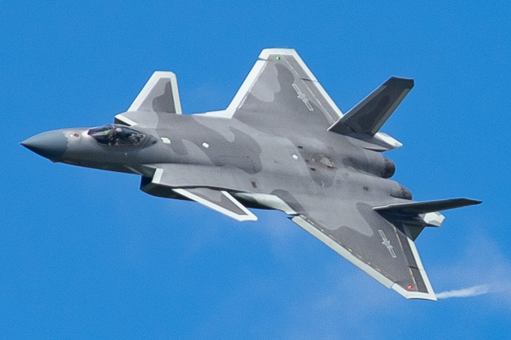

대만 국방부 “중국 군용기 4대, 대만 주변 공역 진입”
대만 국방부가 중국 군용기 4대가 대만 북부·중부·남동부 공역에 진입했다고 밝혔다. 대만군은 통상 절차에 따라 대응했다고 설명했다.
주유민 기자 · 2026.07.21
橋대만

대만 국방부가 중국 군용기 4대가 대만 주변 공역에 들어와 대응에 나섰다고 자유시보가 전했다. 북부·중부·남동부 방향에서 활동이 포착됐다는 설명이다.
광고 문의 · 300×250대만해협 주변의 군용기 활동은 최근 몇 년간 되풀이돼 온 사안이다. 대만 측은 이를 정기적으로 집계·공개하며, 중국 측은 자국의 통상적 훈련이라는 입장을 유지해 왔다.
이런 활동은 지역의 군사적 긴장과 우발적 충돌 가능성에 대한 관심을 높인다. 관련 당사자들은 오판과 사고를 막기 위한 소통과 자제의 필요성을 거론한다.
대만해협의 안정은 역내 교역과 항행에도 직접 영향을 주는 사안이다. 국제사회는 현상 유지와 대화를 통한 긴장 관리를 강조해 왔다.
華橋時報는 양안 문제에서 어느 한쪽의 입장을 지지하지 않으며, 대만과 중국 양측의 관점을 균형 있게 전한다. 우리는 긴장의 평화적 관리가 역내 모든 주민의 이익이라는 원칙을 지킨다.
출처·참고 (사실 확인용 — 본문은 직접 재작성)
· 自由時報
· 自由時報